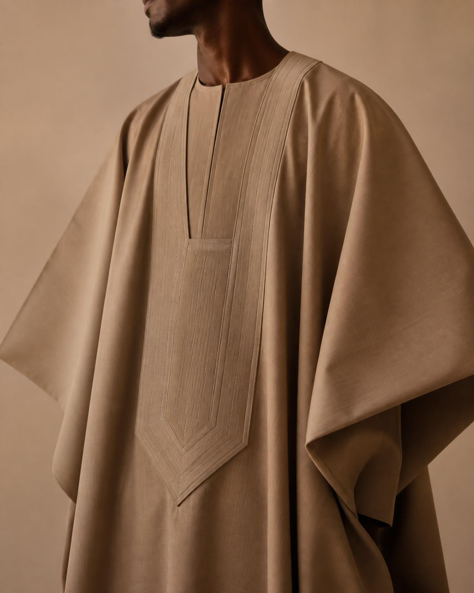
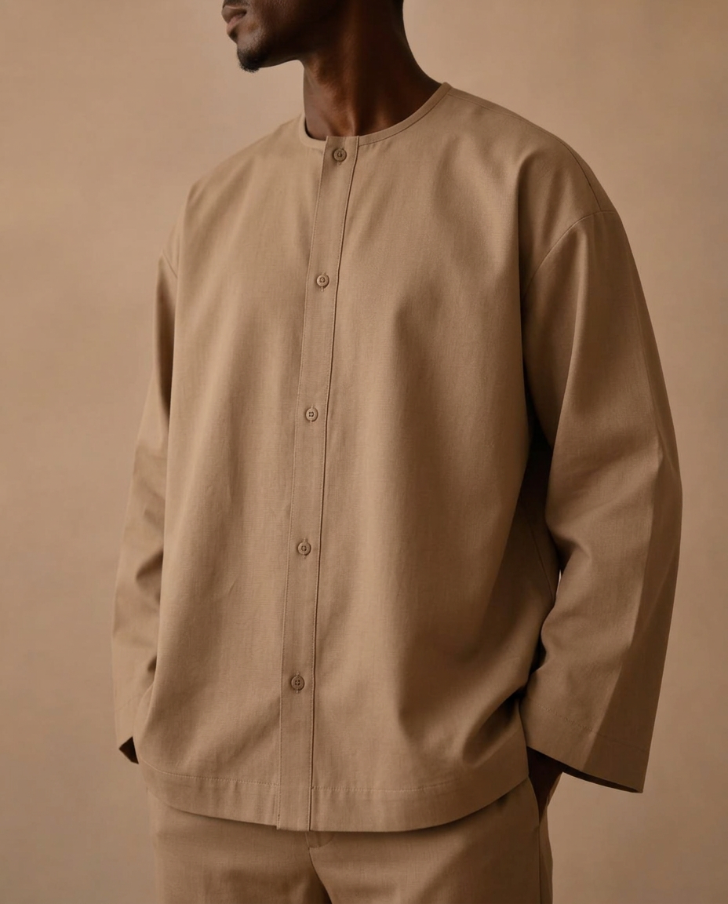
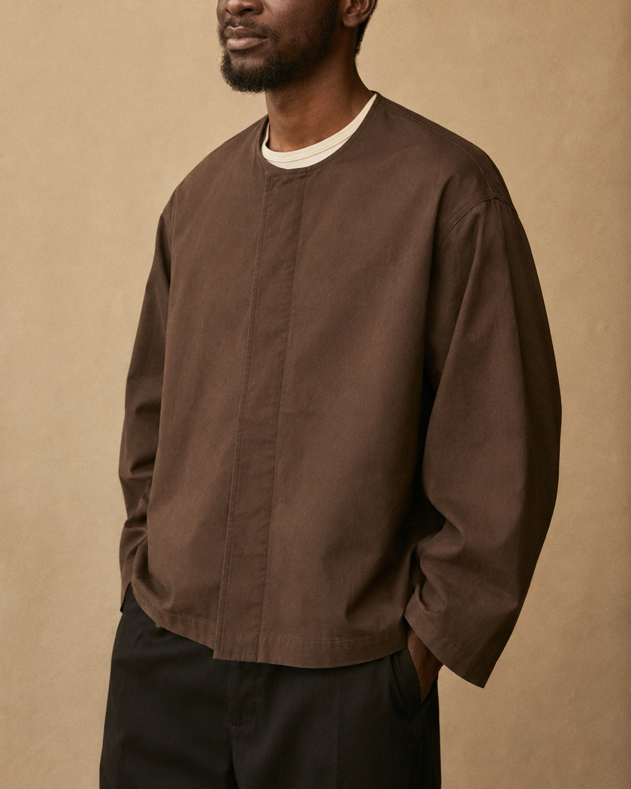
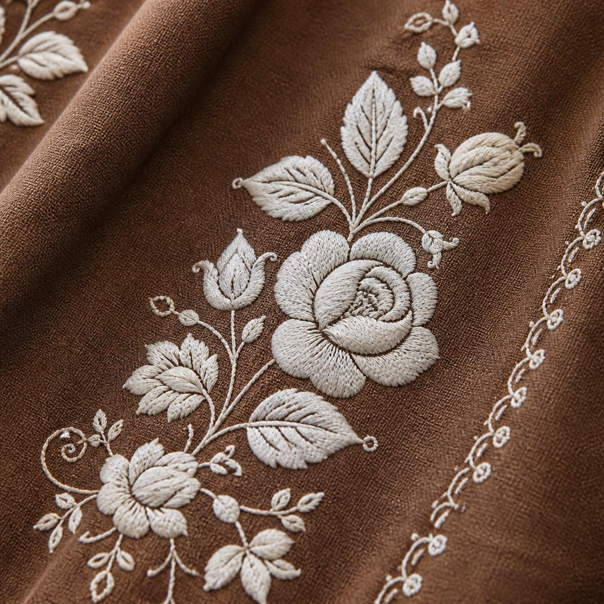
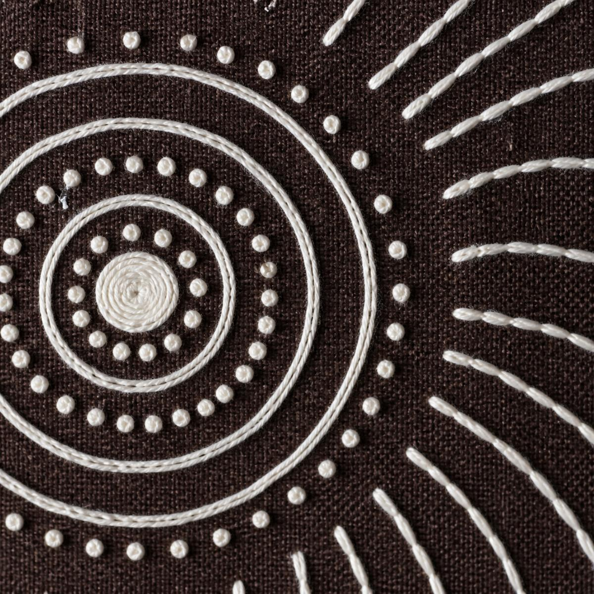

Beige · Brown · One white thread
Three cuts inherited from the agbada — the full robe, a box overshirt, a cropped jacket. Each embroidered in a single thread — Matyó florals from Mezőkövesd or Òsùpá, the moon drawn in circles, on the ground you choose.

Lagos cut · Stockholm wear
Floor length, wide draped sleeves, raw cotton.

Hip length, square shoulder, brushed linen.

High-hip length, relaxed box cut, drop shoulder, cocoa twill. Photo runs shorter and slimmer than ours will — the cut covers the waistband.
No fixed pairings
2 cuts × 2 patterns × 3 grounds = twelve robes
Names are proposals: the cuts carry Yoruba words, the patterns their origins — the Matyó rose by its town, the medallion by the moon. Yoruba spelling and tone marks go to the family for correction before anything ships.
Two hands, one thread
The Matyó rose is stripped to a single white thread, so the pattern reads as light on cloth rather than decoration. The Nigerian answer is geometry: concentric rings, seed knots and curved rays radiating from one still centre.
Both drawings travel to Lagos for correction — the workshop holds the pen.


One garment, three grounds